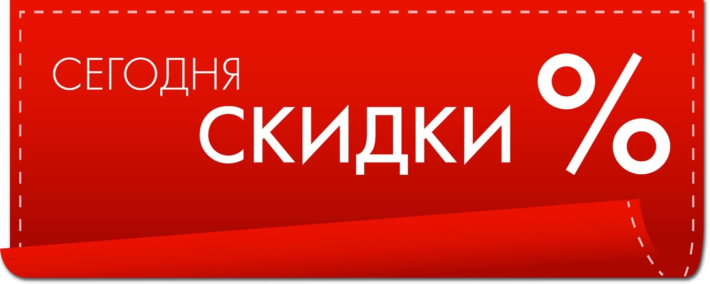

Дисконт (англ.discount) - экономический термин, в буквальном переводе с английского означает скидка, вычет, разница[1]. В зависимости от контекста, может принимать различные значения.
Скидка с объявленной прейскурантной цены товара или услуги, предоставляемая продавцом потребителю во время распродажи[1]. Скидка может быть предложена при незамедлительной оплате наличными (наличная скидка) либо при оптовой закупке (торговая скидка). Торговые скидки предоставляются для того, чтобы позволить продавцу увеличить объем продаж и, следовательно, достичь экономии от масштаба, или используется, как уловка, чтобы заручиться "верностью" клиента, или предоставляются по требованию крупного и влиятельного покупателя.
